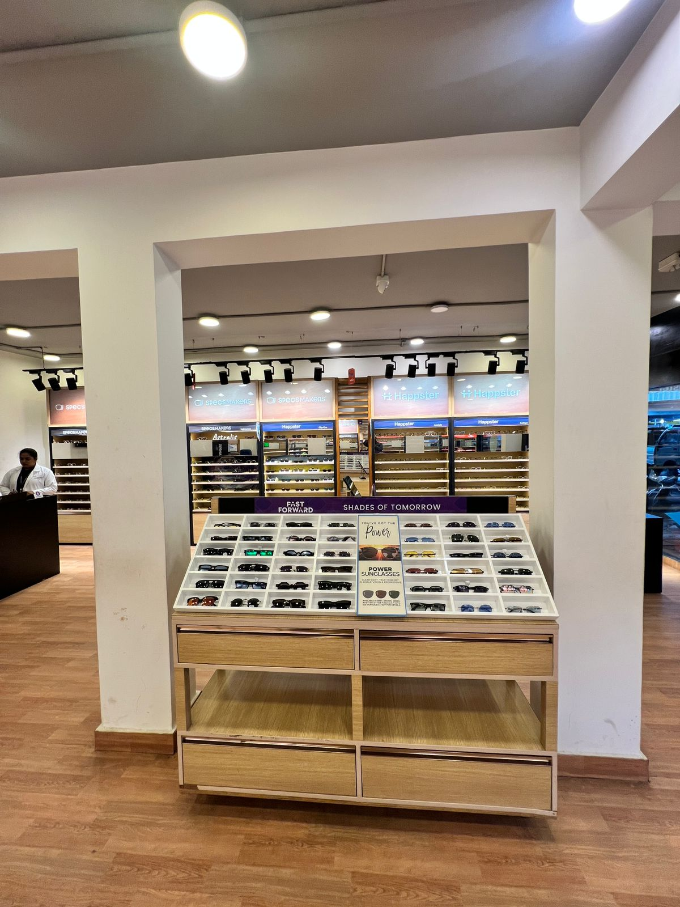
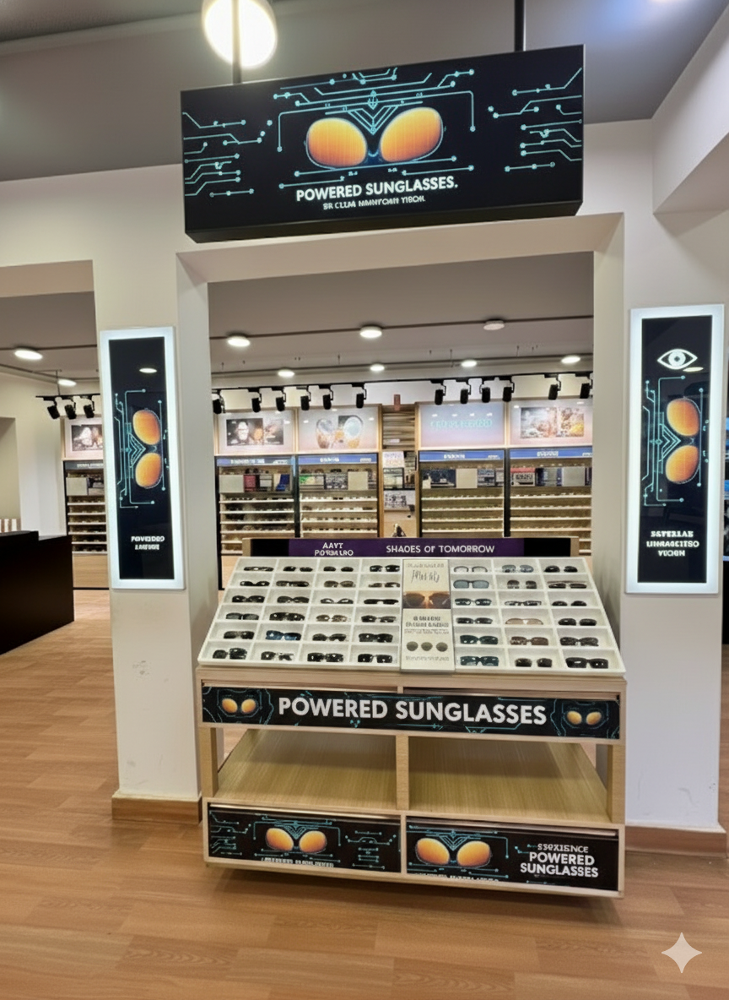
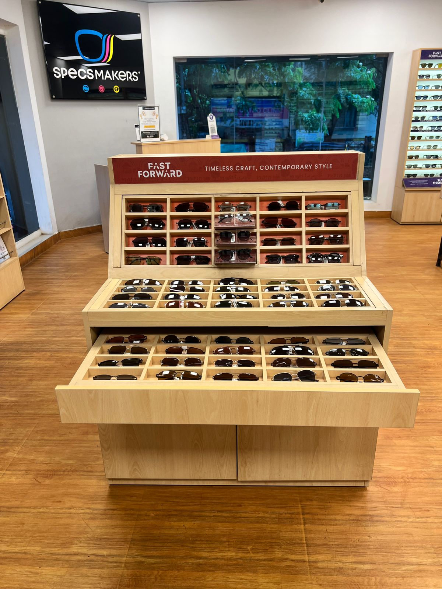
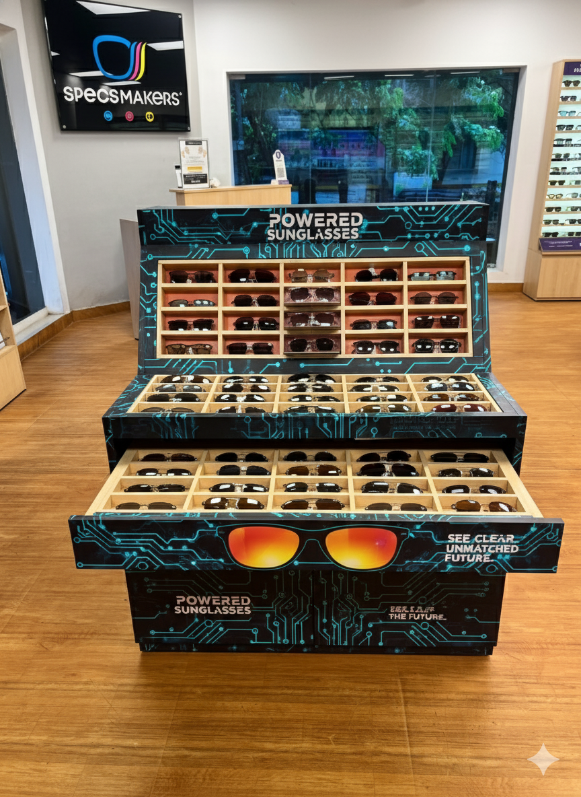
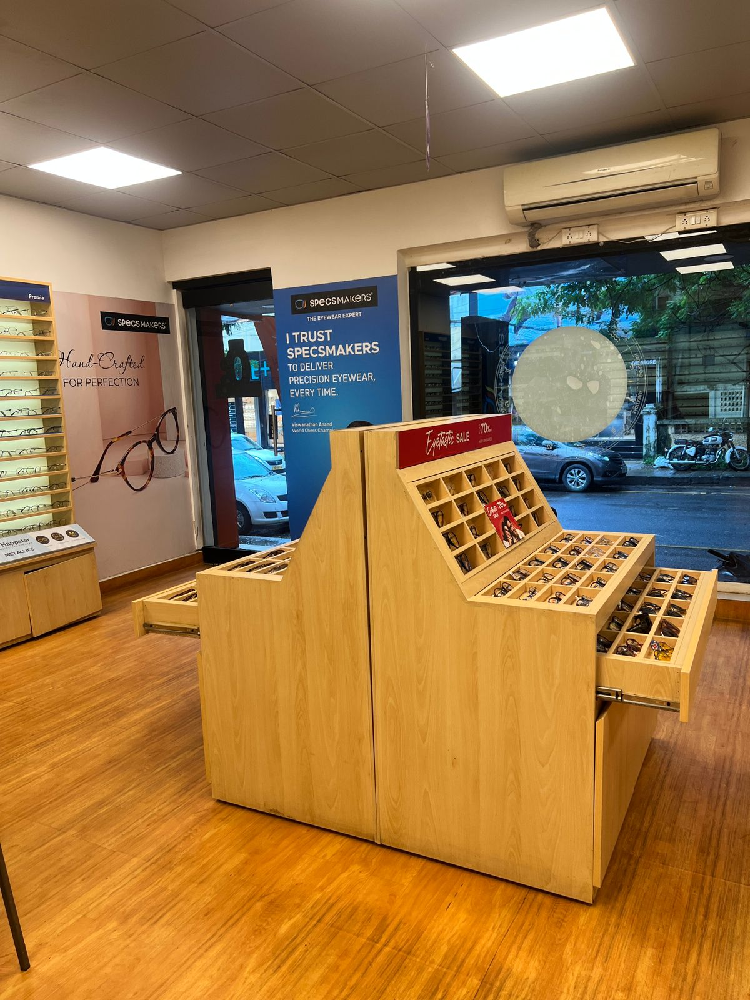
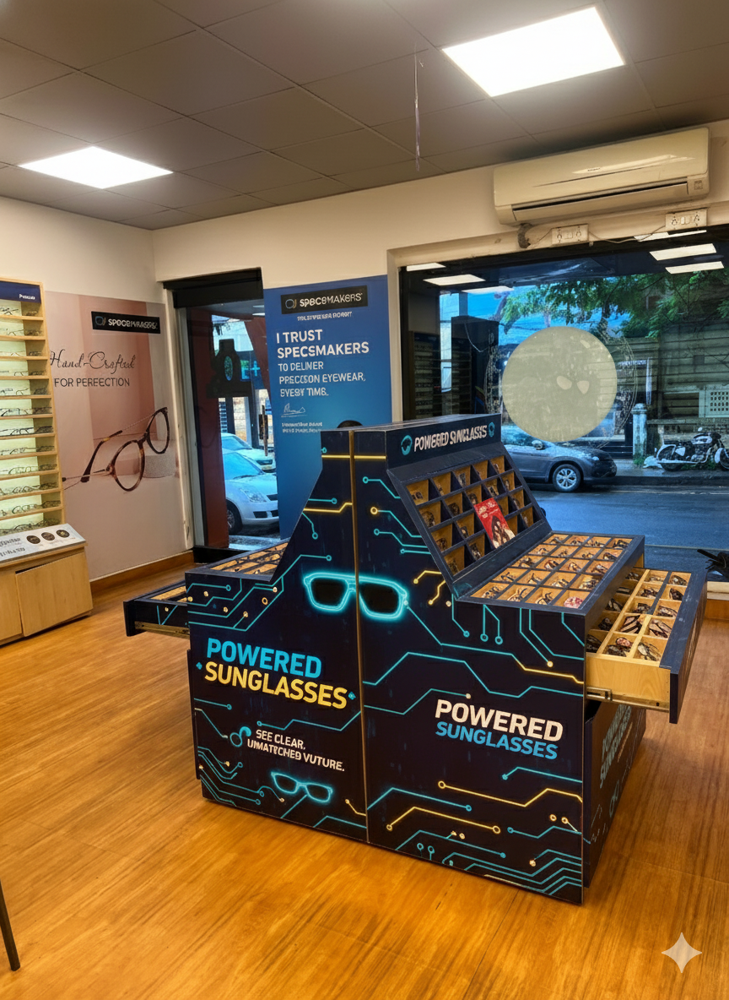
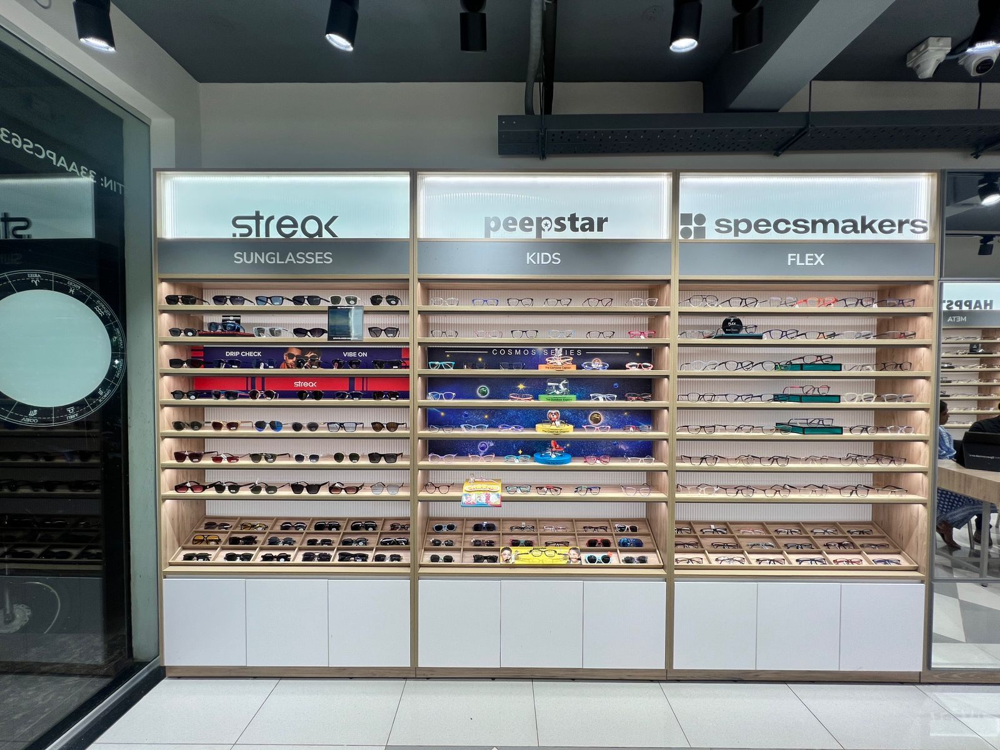
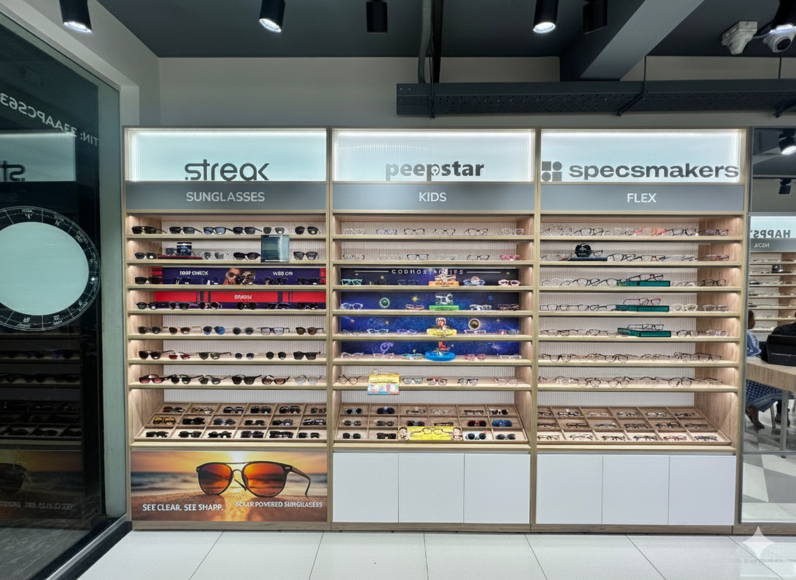
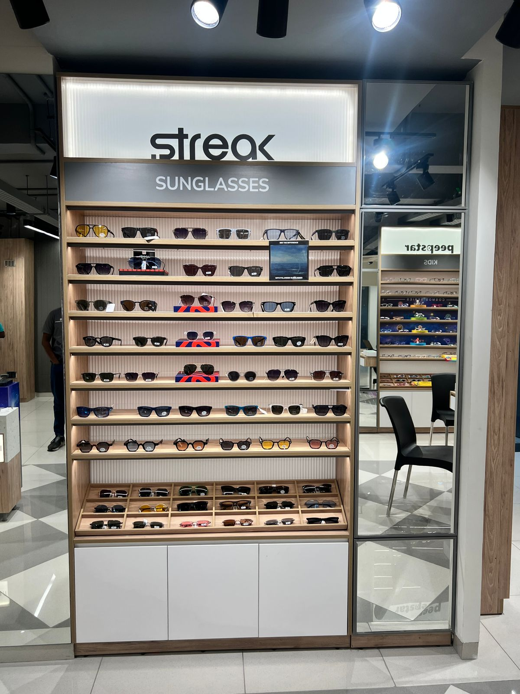
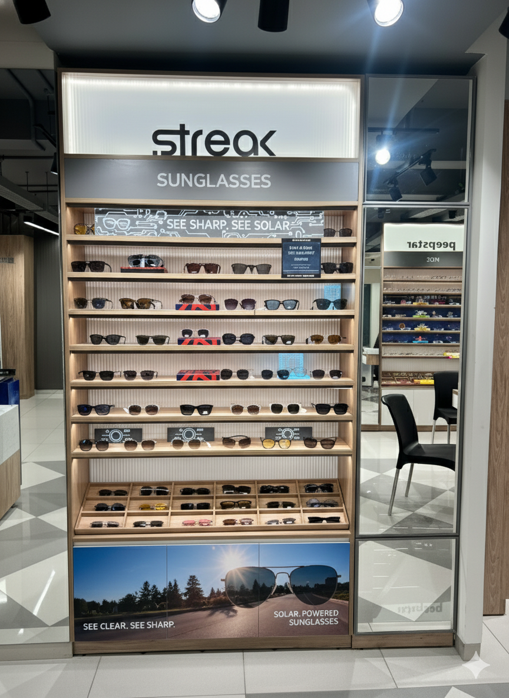

How to highlight or work with the powered sunglass section to give a little more attention
Date: 30th October 2025
Summary
Concept Overview: Sunglass also can be powered sunglasses, to highlight that in store would be a major plus.
Design Elements
1
Adayar Store


Observation: the before and after image shows how powered sunglass section can give a give glimpse of how comunications can anchor and highlight the powered sunglass section.
Recommendation: branding wraps around the powered sunglass section to highlight the section.
2
Adayar 2 Store




Observation: the before and after image shows how powered sunglass section can give a give glimpse of how comunications can anchor and highlight the powered sunglass section.
Recommendation: branding wraps around the powered sunglass section to highlight the section.
3
New Format Store




Observation: the before and after image shows how powered sunglass section can give a give glimpse of how comunications can anchor and highlight the powered sunglass section.
Recommendation: branding wraps around the powered sunglass section to highlight the section.